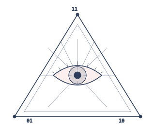
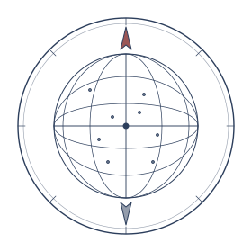
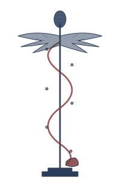

Governo aberto · LGPD · processo administrativo digital · decisão algorítmica.
Quatro artigos — uma releitura crítica: o Estado que edita a regra é o que mais a descumpre contra o cidadão.

Não há mais como reduzir a privacidade a uma esfera de retraimento contra o Estado: ela é um feixe de pretensões, posições e deveres que se irradiam pela ordem constitucional.
Salgado e Saito mobilizam a noção de multifuncionalidade dos direitos fundamentais para sustentar que a proteção de dados pessoais não se esgota na clássica função de defesa contra ingerências do poder público. Ela carrega, simultaneamente, uma função de prestação normativa — exigir do Estado a edição de leis protetivas, como a LGPD — e uma função de prestação fática, exigindo políticas, autoridades e instituições.
O argumento desloca a discussão técnica para o terreno constitucional: a privacidade vincula todos os Poderes, e o legislador não cumpre a Constituição apenas se abstendo, mas também produzindo o arcabouço protetivo que dá densidade ao direito.
Ao desenhar essa moldura, os autores criam o vocabulário que vai amparar a leitura dos artigos seguintes — e que será determinante quando a discussão chegar à decisão automatizada.
i. Defesa. Contra ingerências do Estado — vigilância, retenção, compartilhamento sem finalidade. Esta é a função clássica, a que a LGPD não abandona.
ii. Prestação normativa. Dever de o legislador produzir o arcabouço protetivo: a própria LGPD, o regulamento da ANPD, instrumentos de tutela coletiva. O silêncio legislativo é, ele próprio, inconstitucional.
iii. Prestação fática. Estrutura administrativa para tornar o direito efetivo: ANPD, encarregados, canais de exercício de direitos, fiscalização. Sem instituição, a norma é decorativa.
A leitura é decisiva: regular não substitui defender. Quem trata os dados — o Estado, em larga medida — segue sendo aquele de quem o cidadão precisa ser defendido.
Hesse (1970), Suécia (1973), Privacy Act EUA (1974). Foco em bancos de dados estatais — contenção do regulador-coletor.
Modelo francês (1978). Ainda baseada na privacidade como liberdade negativa — dever de abstenção do poder público.
Reconhece a vulnerabilidade do usuário. Princípios europeus — finalidade, qualidade, segurança — ganham densidade institucional.
GDPR (2016) e LGPD (2018). Direitos do titular, ANPD, compliance e sanções do regulador.
A LGPD brasileira é geneticamente híbrida: terceira-quarta geração — mas inscrita num Estado que ainda exibe traços da primeira. O regulador-coletor segue sendo a maior fonte de risco.
A ANPD nasce, em 2018, sem autonomia, sem orçamento próprio, vinculada à Presidência. Estrutura mínima para uma tarefa máxima.
A criação tardia da autoridade — e a fragilidade institucional persistente — confirma o argumento central de Salgado e Saito: a prestação normativa sem prestação fática é insuficiente.
Sem a ANPD operante, a função de defesa volta a depender do controle externo — STF, Ministério Público, Defensoria — e do próprio cidadão, em uma assimetria que a LGPD se propunha a corrigir.
O retrato é, portanto, ambíguo: temos um direito robusto no papel que esbarra em uma estrutura administrativa frágil para concretizá-lo.
O coração da tese deste seminário já está em Salgado & Saito, em uma única ressalva: a regulação não anula a função de defesa do direito fundamental. O Estado segue sendo, nas palavras dos autores, "um poderoso agente de tratamento" — e a LGPD, longe de neutralizar essa dimensão, a confirma.
A prova prática chegou rápido. Snowden mostrou que o aparato estatal é, por definição, o maior coletor. A MP 954/2020, no Brasil, transferiu dados de telecom para o IBGE sem finalidade clara — e foi preciso o STF, na ADI 6.387, conter o regulador-coletor.
O regulador não se autodefende. Foi necessário outro Poder.
É o sujeito que precisa, ainda hoje, ser protegido contra o aparato que escreve a norma. No nosso Conselho de Contestação Algorítmica, esta voz carrega Salgado & Saito — a autodeterminação informativa do administrado em face do regulador-coletor.
Voz do art. i · Mapeada 1:1 com o Conselho.
Valor público como critério de desempenho: gestores devem maximizar benefícios para a coletividade. Revisitado em Recognizing Public Value (2013).
Sucede a New Public Management. Duas ondas: (i) reintegração de serviços e digitalização; (ii) web social, cloud, apps. Fluxo de informação como elo Estado–cidadão.
Três áreas: governo de dados, dados para valor público, dados para confiança. Meta: serviços públicos melhores com salvaguardas éticas.

A pergunta deixa de ser "o Estado é transparente?" — e passa a ser "quem consegue ler os dados que ele abriu?"
i. Transparência. Publicidade ativa de informações, formatos abertos, atualização sistemática.
ii. Accountability. Possibilidade efetiva de pedir contas — não apenas ver, mas responsabilizar.
iii. Participação. Canais para que o dado virado público alimente deliberação, e não só consulta.
iv. Tecnologia. Padrões, APIs e interoperabilidade — sem os quais a abertura é apenas publicação inerte.
A INDA, criada em 2012, ainda hoje é pedra de toque. Mas sua implementação convive com vazios de governança que reaparecem nas barreiras estruturais do slide seguinte.
A Constituição de 1988 inscreveu publicidade como princípio da Administração (art. 37) e habeas data como instrumento (art. 5º, LXXII). De lá para cá, o legislador foi adensando o vocabulário.
A Lei de Responsabilidade Fiscal (LC 101/2000) introduz a transparência ativa de finanças públicas. A Lei de Acesso à Informação (12.527/2011) generaliza a transparência passiva e ativa — e, simultaneamente, regulamenta o sigilo (art. 23).
A Lei do Marco Civil (12.965/2014) traz a neutralidade e a proteção de dados como princípios da internet. A LGPD (13.709/2018) define o regime geral. A Lei do Governo Digital (14.129/2021) consolida — e cria o federalismo de adesão.
Vinte anos, sete leis-chave: um arcabouço completo no papel. A pergunta seguinte, dos próprios autores, é o que se faz com ele.
Cristóvam e Hahn tratam abertura, transparência, proteção e regulação como ciclo único. Mas existe uma assimetria estrutural que merece nome: a abertura é um dever jurídico do Estado e, ao mesmo tempo, é o próprio Estado quem decide o que abre.
A LAI, no art. 23, autoriza a classificação como reservado, secreto ou ultrassecreto. Recife, SP, Florianópolis são boas práticas; a opacidade seletiva é a prática corrente. O regulador da transparência também é o operador do sigilo.
É a tensão que define a persona Administrador Público: governança que promete abertura e controla as chaves do sigilo.
Voz da governança: capacidade técnica, dever de transparência ativa, fundamentação. Mas também: discricionariedade na classificação do sigilo, na seleção do que se publica, na arquitetura do portal.
Voz do art. ii · Mapeada 1:1 com o Conselho.
Salgado & Saito: o direito fundamental complexo não se reduz à LGPD; a função de defesa segue ativa. O Estado é o maior agente de tratamento.
Cristóvam & Hahn: ciclo único de transparência, dados, participação, regulação. Mas o regulador também é operador do sigilo (LAI art. 23).
Nenhum dos dois artigos chega à decisão algorítmica concreta. O cidadão pode ver e ser protegido — mas a decisão que o afeta pode permanecer opaca.
A Parte II atravessa este ponto cego — saúde, big data e explicabilidade.

Dados sensíveis, populações inteiras, decisões clínicas e administrativas entrelaçadas: a saúde digital expõe os limites de uma LGPD desenhada num paradigma pré-big-data.
Cinco campos em que big data, IA e governança de saúde se sobrepõem: pesquisa clínica, prontuário eletrônico nacional, telemedicina, vigilância epidemiológica e financiamento. Em todos, o Estado é, simultaneamente, regulador e principal coletor.
Soberania de dados — não como nacionalismo digital, mas como capacidade institucional de manter governança sobre fluxos transfronteiriços.
Princípios clássicos da LGPD entram em tensão com a lógica do big data, que opera agregando, recombinando e inferindo.
i. Pesquisa clínica — consentimento granular versus reanálise futura de coortes.
ii. Prontuário eletrônico nacional — integração entre níveis de atenção; risco de inferência identificadora a partir de quase-identificadores.
iii. Telemedicina — captação de dados biométricos contínuos; assimetria entre paciente, plataforma e operadora.
iv. Vigilância epidemiológica — uso emergencial vira regime permanente (lição da pandemia).
v. Financiamento e regulação — bases administrativas (SUS, SIH, SIA) alimentando modelos preditivos pelo próprio gestor.
Em todos, finalidade, minimização e anonimização ficam frágeis justamente quando o Estado é o grande coletor.
Sarlet e Molinaro mobilizam o conceito alemão-europeu de soberania informacional não no registro geopolítico, mas no registro institucional: capacidade do Estado de manter governança e arbitragem sobre fluxos de dados que, por natureza, são transfronteiriços.
A categoria importa porque o big data em saúde envolve, quase sempre, processadores estrangeiros, infraestruturas em nuvem e modelos treinados em outros contextos. A pergunta não é se devemos abrir mão — é como manter autoridade decisória.
No plano técnico, privacy by design (Cavoukian) — princípios incorporados na arquitetura do sistema, e não acoplados a posteriori — aparece como condição mínima. Para os autores, é ele, não a anonimização posterior, que faz a LGPD funcionar em ambiente big data.
Sarlet e Molinaro mostram que a LGPD foi concebida em um paradigma pré-big-data. Finalidade, minimização e anonimização ficam frágeis quando o Estado é o grande coletor. E o Estado é gigante nisso: SUS, CadÚnico, Gov.br, e — em Santa Catarina — mais de 10 milhões de registros preditivos em educação.
No mesmo período, o suposto vazamento de 251 milhões de CPFs do Gov.br mostrou o tamanho do risco quando o maior controlador é o próprio ente que deveria fiscalizar. Minimização vira letra morta quando quem coleta é quem regula.
Sob o mesmo guarda-chuva — "decisão por algoritmo" — convivem ferramentas técnica e juridicamente distintas. A precisão dessa distinção é o que torna a discussão sobre explicabilidade possível.
O algoritmo simples é determinístico — uma regra explícita, auditável linha a linha. Decisões tomadas por ele são, em princípio, plenamente reconstituíveis. A explicabilidade é, no limite, o próprio código.
O modelo preditivo estatístico (regressões, árvores, gradient boosting) já opera em terreno probabilístico. Há explicabilidade — mas em importância de variáveis, em graus de contribuição, e não em "porquê" no sentido jurídico.
A IA contemporânea — redes neurais profundas, modelos de linguagem — apresenta um gap explicativo estrutural: o sistema responde, mas a justificativa não é endogenamente recuperável. Tratar uma rede neural como planilha é o que cria a opacidade administrativa.
Humana. O agente público analisa, decide e fundamenta. Pode usar ferramentas, mas a decisão é dele — e o ônus argumentativo permanece humano.
Híbrida. O sistema sugere, classifica, prioriza; o agente decide. Aqui mora o risco da "humanização decorativa" — a decisão real é da máquina, o carimbo é humano.
Algorítmica pura. A decisão é tomada e comunicada sem interveniente humano. Lei do Gov. Digital prevê (art. 19); LGPD impõe direito à revisão (art. 20).
Para Tavares e coautores, cada tipologia exige arquitetura própria de explicabilidade e contraditório. A diferença é constitucional, não cosmética.
Avaliação de impacto algorítmico, transparência ativa sobre critérios, prazos, parâmetros. Não é «publicação do código»; é compreensibilidade pública dos pressupostos.
Logging, trilhas de auditoria, identificação dos dados efetivamente usados e do modelo em execução. Esta é a camada que possibilita o contraditório posterior.
Motivação ao destinatário em linguagem inteligível, indicação dos dados, base legal, modelo usado e canal direto de contestação. Aqui a explicabilidade vira devido processo.
A leitura constitucional do art. 5º, LV, é direta: o devido processo administrativo exige contraditório prévio. Adiar para o recurso é, na prática, suprimir o instituto — porque a decisão já produziu efeitos sobre o destinatário.
Tavares e coautores fazem a translação para a decisão automatizada: direito à explicação antes, direito a manifestar-se antes, direito à revisão por agente competente. Sem os três, não há contraditório — há comunicação de resultado.
Essa releitura é o que vira software no nosso protótipo. O Conselho de Contestação Algorítmica é uma materialização desse esquema: explicar, abrir, deliberar, recorrer.
Aqui é onde o Estado-regulador mais descumpre o Estado-norma. A próxima parte do seminário mostra como.
Uma mulher de 62 anos, aposentadoria por idade rural negada por inferência entre CadÚnico, RAIS e CNIS. O sistema decide. O aplicativo comunica. Não há motivação, não há contraditório, não há rosto.
O regulador-do-recurso é quem suprime o recurso.
Inconsistência cadastral e risco elevado de inelegibilidade detectado em modelo automatizado.
Cada caixa pontilhada é um hook que o devido processo administrativo prevê — e que o INSS não cumpre. Sete nulidades em um único ato.
Em todos: quem edita a regra e quem descumpre são a mesma pessoa jurídica. A diferença entre os casos é apenas se houve, ou não, um outro Poder a contê-los.
O cidadão muitas vezes nem sabe que foi uma máquina que decidiu — e não faz ideia do que é «inteligência artificial» ou «decisão algorítmica».
Não se contesta o que não se compreende. Empoderar não é só abrir um canal de recurso: é traduzir a decisão em linguagem que a pessoa entenda. Transparência não basta — falta inteligibilidade.
Tese normativa: certas decisões podem ser automatizadas — mas a comunicação de uma decisão adversa a alguém em situação de vulnerabilidade deveria ser feita por uma pessoa, não por uma máquina.
Humano no circuito não apenas na decisão — também no cuidado da comunicação. Notificar um indeferimento por um app frio, a quem depende do benefício para comer, é violência burocrática silenciosa.
A pessoa submete o ato. O sistema lê o documento bruto.
Diagnóstico do que falta à decisão.
Bases possíveis; quase-identificadores; risco de inferência.
Defensoria · Cientista · Administrador · Cidadão. As 4 leituras do seminário, virando software.
LAI, LGPD, recurso administrativo — em linguagem da pessoa.
| persona | artigo | o que ela carrega |
|---|---|---|
| Defensoria Pública | Tavares et al. | contraditório prévio · art. 5º LV · LGPD art. 20 |
| Cientista de Dados | — transversal — | explicabilidade · viés de proxy · auditabilidade |
| Administrador Público | Cristóvam & Hahn | governança · IN 128/2022 · L. 14.129/2021 |
| Cidadão | Salgado & Saito · Sarlet & Molinaro | autodeterminação informativa · exclusão digital |
A trabalhadora rural, indeferida automaticamente, leva seu caso ao Conselho de Contestação Algorítmica. Quatro perspectivas jurídicas — as quatro leituras do seminário — deliberam em três fases. No fim, o sistema não decide pela pessoa: ele devolve a ela o contraditório que o Estado suprimiu.
A demonstração local roda offline e foi pensada para esta apresentação. Em paralelo, mantemos uma versão em produção deployada no Google Cloud Run, com as iterações de design e UX em andamento.
A Administração Pública digital está decidindo melhor — ou apenas decidindo mais rápido, com menos chance de compreensão, contestação e participação?
Ana Vitória Vanzin & Vinícius Oliveira · PPGD/UFSC · 2026